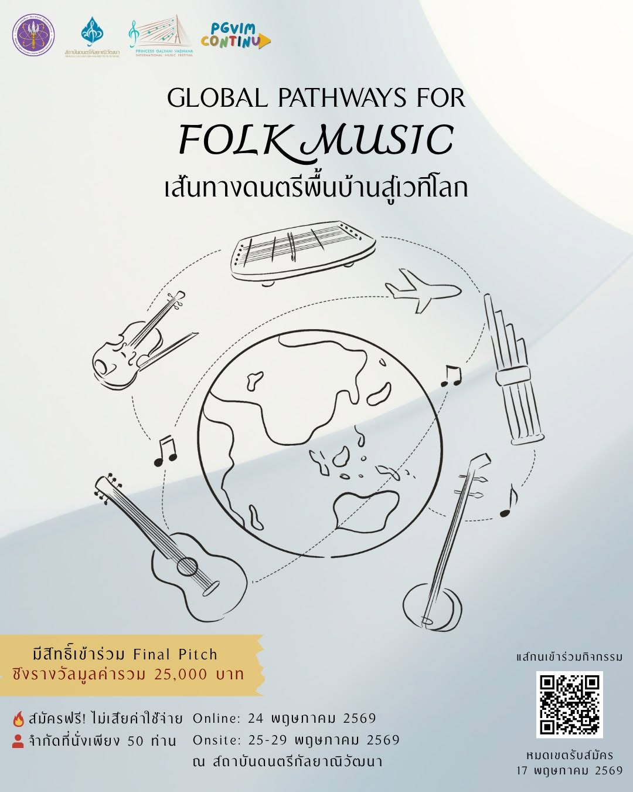

โครงการเรียนรู้ตลอดชีวิตและพัฒนาทักษะเพื่ออนาคต
Upskill / Reskill ประจำปีงบประมาณ 2569
รวมรายงานความก้าวหน้าของหลักสูตรระยะสั้นทั้งหมดภายใต้สถาบันดนตรีกัลยาณิวัฒนา ที่ได้รับการสนับสนุนจากสำนักงานปลัดกระทรวงการอุดมศึกษา วิทยาศาสตร์ วิจัยและนวัตกรรม (สป.อว.)
เปิดสอนแล้ว 2 หลักสูตร
หลักสูตรทั้งหมด

กำลังดำเนินการ
Performance Resilience & Artistic Wellbeing
ความยืดหยุ่นทางการแสดงและสุขภาวะของศิลปิน · 20 พ.ค. – 29 ก.ค. 2569
–
ผู้สมัคร
–
คาบที่จัดแล้ว
–
พึงพอใจรายคาบ /5
–
พึงพอใจโดยรวม /5
ดูรายงานฉบับเต็ม→

จัดจบแล้ว
Global Pathways for Folk Music
เส้นทางดนตรีพื้นบ้านสู่เวทีโลก · 25–29 พ.ค. 2569
–
ผู้สมัคร
16
คาบทั้งหมด
–
พึงพอใจรายคาบ /5
–
พึงพอใจโดยรวม /5
ดูรายงานฉบับเต็ม→
หน่วยกิตสะสม (Credit Bank)
📚
Performance Resilience & Artistic Wellbeing
2 หน่วยกิต
2 หน่วยกิต
📚
Global Pathways for Folk Music
1.5 หน่วยกิต
1.5 หน่วยกิต
ภายใต้ระบบ Credit Bank ของสถาบันดนตรีกัลยาณิวัฒนา
แหล่งข้อมูลเพิ่มเติม